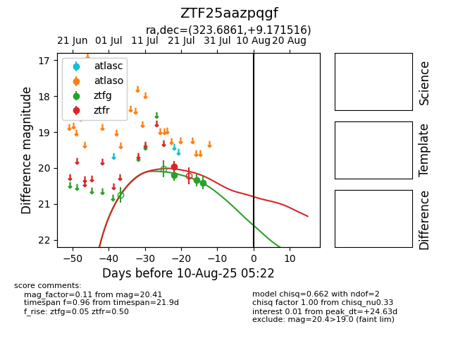

Target ZTF25aazpqgf at 2025-08-10 05:22, see:
FINK: fink-portal.org/ZTF25aazpqgf
Lasair: lasair-ztf.lsst.ac.uk/objects/ZTF25aazpqgf
ALeRCE: alerce.online/object/ZTF25aazpqgf
alt names
ZTF25aazpqgf (ztf,fink)
coordinates:
equatorial (ra, dec) = (323.6861,+9.17152)
galactic (l, b) = (63.2109,-30.11466)
photometry
last ztfg=20.41, ztfr=19.96
3 ztfg, 1 ztfr detections
